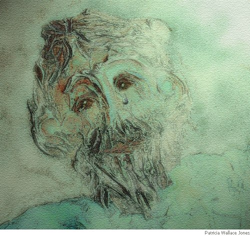

Catherine Chandler
Inheritance
tr. from Peso ancestral by Alfonsina Storni
You said, “My father never wept;
and grandfather would never moan.
Men of my race have never cried;
we’re men of stone.”
And as you said these words, your tear
fell on my lips; such bitter gall
I’ve never tasted in another
glass so small.
This poor, weak woman drank, for I
to centuries of pain relate.
And oh, my soul cannot withstand
its crushing weight.
Peso ancestral
(original Spanish)
Tú me dijiste: no lloró mi padre;
tú me dijiste: no lloró mi abuelo;
no han llorado los hombres de mi raza;
eran de acero.
Así diciendo te brotó una lágrima
y me cayó en la boca . . .; más veneno
yo no he bebido nunca en otro vaso
así pequeño.
Débil mujer, pobre mujer que entiende,
dolor de siglos conocí al beberlo.
Oh, el alma mía soportar no puede
todo su peso.
— Alfonsina Storni (1892-1938)

Note on the Translating Experience: “Peso ancestral”
After many years of translating French and Spanish technical and legal documents into English, I thought I would do some literary translations. As I write only formal, metrical poetry, I decided to choose formal, metrical poetry from several well-known French Canadian poets as well as a few from France, Spain and Latin America. All poems I translate are in the public domain.
I particularly love the poetry of Alfonsina Storni, especially when she writes feminist poetry (which is much of the time). Also, she was once quoted as saying, “I write poetry in order not to die.” My own reason, as well. More about Storni’s life is available at http://www.cervantesvirtual.com/bib_autor/Alfonsina/autora.shtml
I decided to translate “Peso ancestral” because it is a profoundly moving piece of art, and because previous English translations seem to me somewhat stilted.
As in all literary translations, especially in formal, metrical poetry, there were some challenges to overcome and some sacrifices to be made. I found some difficulty in deciding on a title, and was tempted to use the literal translation “Ancestral Weight”, but decided against it, as it might be construed as a poem about hereditary obesity! In all seriousness, I knew the true meaning would become apparent once the poem was read to its finish.
As can be seen in the translation, I did not repeat the words “Tú me dijiste” or “lloró”, but made the entire quatrain one long quotation. In the first attempt, I tried to write line 4 as “we’re men of steel” — but to no avail. I could not find the correct rhyme, thus “moan” and “men of stone”. Speaking of rhyme, although the rhyming in the original is abcb with b assonantal e-o throughout, I went for true rhyme abcb. I also kept to the accentual pattern of the original, though not its syllabics.
The second stanza was the easiest to translate. Although “veneno” (poison) is translated as “gall”, I felt the word was as faithful as I could get to the bitterness Storni is trying to communicate; also, there is no substitute, in my opinion, for “a glass so small”.
The last stanza was the most problematic, as it is the essence of the poem. First, I did not relish translating the first line, because I don’t like stating that woman is “poor” and “weak”, though I have an idea Storni was writing ironically (Argentine women of the time — and for a long time after — were universally considered poor, weak, ornamental creatures).
I then decided to combine the concept of the understanding woman (entiende) and her recognition of the man’s pain (conocí) with the one word “relate”, though I used inversion, as Storni also does. I was tempted to use the words “will not” instead of “cannot” for purposes of alliteration, but reverted to “cannot” as its importance is emphasized in its place at the end of the line.
Catherine Chandler was born in New York City and raised in Pennsylvania. She has an M.A. from McGill University, where she teaches Spanish in the Department of Translation Studies. Her poems and translations have been widely published in the United States, Canada, Australia and the United Kingdom.
|